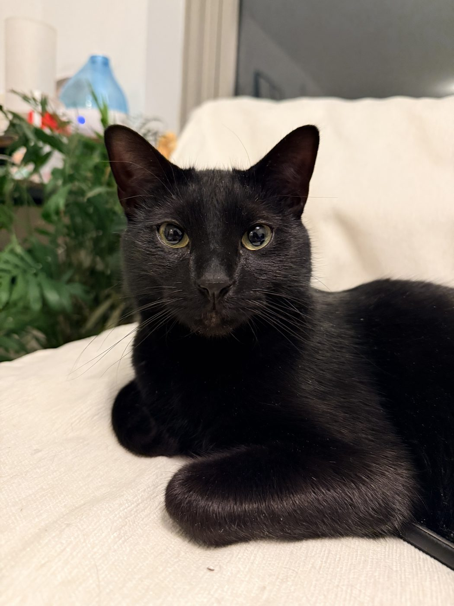

People
Principal Investigator
 |
Hengyun (Harry) Zhou Harry received his BS from MIT and his PhD from Harvard University, and previously served as Quantum Error Correction Architecture Lead at QuEra Computing. His research focuses on accelerating the development of large-scale, fault-tolerant quantum computers through full-stack architectural innovation. He works across quantum error correction, algorithms and compilation, and hardware architecture, developing hardware-efficient fault-tolerant schemes that significantly reduce the space-time overhead required for scalable quantum systems. During his PhD, he also made key contributions to quantum sensing and many-body physics, and was named a finalist for the American Physical Society's Deborah Jin Thesis Prize. Email: hy[last name][@]mit.edu |
Current Team
|
 |
Kuro Usually in a superposition of nap and zoomies. |
You? |